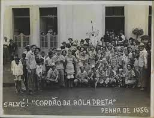

Carnival was brought to Brazil by Portuguese colonizers between the 16th and 17th centuries, initially manifesting itself through Entrudo, a popular game. As time went by, Carnival acquired other forms of manifestation, such as the masquerade ball. The emergence of carnival societies contributed to the popularization of the party among the poor.From the 20th century onwards, the popularization of the party contributed to the emergence of samba, a musical style heavily influenced by African culture, and the samba school parade, an event that ended up being made official with government support. During this period, Carnival assumed its position as the biggest popular festival in Brazil.
Carnival arrived in Brazil through the practice of Entrudo, a very popular game in Portugal. This practice was established in Brazil, at the turn of the 16th to the 17th century, and was very popular until the 19th century, disappearing from the country in the middle of the 20th century, due to the repression that was established against this game. Entrudo could be carried out in different ways, such as demonstrations of public mockery. The best known form was the wet game, held a few days before Lent and which consisted of a game of wetting or dirtying people who passed by on the street. It could be done publicly, but it could also be done privately. In the wetting game, containers were produced that were filled with a certain liquid. This liquid could be flavored, but it could also be smelly and, in this case, the container was filled with water dirty with flour or coffee, for example, and even urine. In the public sphere, Entrudo was used as a tool of mockery, as people turned against anyone who crossed the streets of towns or cities. As it was a very popular practice, especially in the 18th and 19th centuries, this game was seen as an opportunity for extra income for some families. These families were dedicated to producing containers, which were filled with any type of liquid, to then sell them. The game was so popular that even the Brazilian royal family was a fan of Entrudo. Even though it was popular, Entrudo did not please most of Brazil's elites, so much so that, throughout our history, several decrees against Entrudo were issued. In the 19th century, there was an intense campaign against Entrudo. As a result of the transition from monarchy to republic, the State's more consistent action in gentrification actions (expulsion of popular classes from city centers) and the repression of popular demonstrations, the practice lost strength at the beginning of the 20th century. The press was largely responsible for developing the campaign against Entrudo in Brazil. While Entrudo was repressed in the streets, the Empire's elite created carnival balls in clubs and theaters. During Entrudo, there was no music, unlike the balls in the imperial capital, where polkas were played mainly. Rio de Janeiro's elite would also create societies, the first of which was the Congress of Carnival Sumidades, to parade in the city's streets. While Entrudo was repressed, imperial high society tried to take to the streets.
Even in the face of obstacles, the popular classes did not give up on their carnival practices. At the end of the 19th century, seeking to adapt to attempts at police discipline, Cordões and Ranchos were created. The first included the use of the aesthetics of religious processions with popular manifestations, such as capoeira and zé-pereiras, players of large bass drums. Ranchos were processions practiced mainly by people of rural origin. Carnival marches also emerged in the 19th century, highlighting the figure of Chiquinha Gonzaga, as well as her song “Ô abre alas”. Samba only emerged around the 1910s, with the song “Pelo Telephone”, by Donga and Mauro de Almeida, becoming, over time, the legitimate musical representative of Carnival.
In Bahia, the first Afoxés appeared at the turn of the 19th century with the aim of remembering African cultural traditions. The first Afoxés were the “Embaixada da África” and the “Pândegos da África”. Around the same period, Frevo began to be played in Recife, and Maracatu took to the streets of Olinda. Throughout the 20th century, Carnival became even more popular in Brazil and saw a diversity of forms, both among the ruling class and among the popular classes. Around the 1910s, corsicans emerged, with the convertible cars of Rio's elite parading along Avenida Central, now Avenida Rio Branco. This practice lasted until around the 1930s.